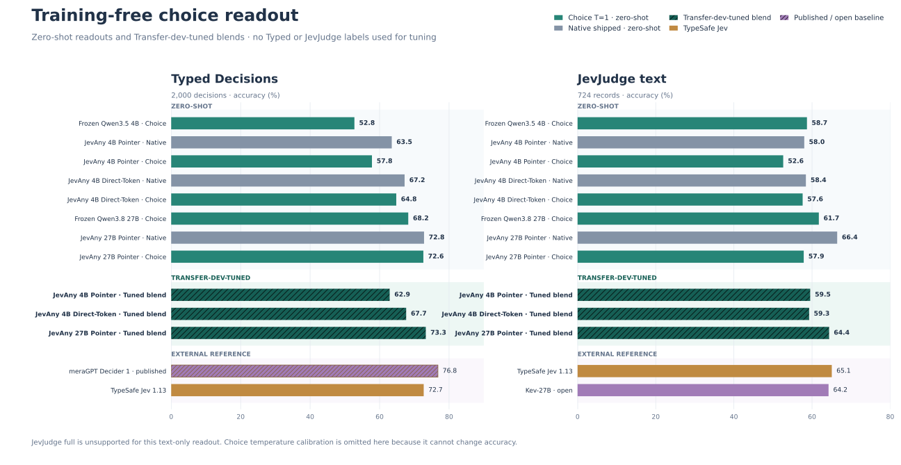

JEVANY / DOCUMENTATION
Training-free choice-token readout
Choice-token readout turns an ordinary causal language model into a decision readout without adding or training a head:
- Preserve the candidate order and assign the exact one-character IDs
A–Z, a–z. - Ask for one case-sensitive option ID with thinking disabled.
- At the answer position, sum the mass of every vocabulary token that decodes exactly to each available ID.
- Renormalize over the available IDs and map the distribution back to the original option keys.
This operation can change the ranking and the selected answer. It is therefore not temperature calibration. A scalar temperature changes probability values but cannot change argmax accuracy. A native + choice stack is a third operation: it pools two distributions and can change the answer.
The same readout works on a frozen base model or after loading a JevAny Pointer or Direct-Token adapter. No additional readout training is performed.
Use it
The checkpoint-native readout remains the default. Select choice-token readout
with --readout choice:
jevany eval \
--run SimpleJev/JevAny-Qwen3.5-4B-Direct-Token-LoRA \
--suite /path/to/jevbench-public-v1.4.2.2 \
--out runs/choice-readout/qwen35-4b-direct \
--device cuda --readout choice --choice-temperature 1.0
jevany decide request.json \
--checkpoint SimpleJev/JevAny-Qwen3.5-4B-LoRA \
--device cuda --dtype bf16 --readout choice
jevany serve \
--checkpoint SimpleJev/JevAny-Qwen3.5-4B-LoRA \
--device cuda --dtype bf16 --readout choice
Use --choice-native-weight to pool the choice and checkpoint-native
distributions. This executes both paths. --choice-max-tokens controls the
choice prompt limit. The former letter selector and --letter-* flags remain
hidden compatibility aliases.
The matrix evaluator also accepts a frozen base directly:
python -m scripts.evaluate_choice_readout_matrix \
--base Qwen/Qwen3.5-4B \
--revision 851bf6e806efd8d0a36b00ddf55e13ccb7b8cd0a \
--base-load-path /path/to/Qwen3.5-4B \
--model-name Frozen-Qwen3.5-4B \
--out runs/choice-readout/base4 \
--jevbench /path/to/jevbench-public-v1.4.2.2 \
--transfer /path/to/transfer-v9 \
--typed /path/to/typed-decisions \
--jevjudge /path/to/jevjudge-public
Limits
- Text input only; JevJudge full multimodal is unsupported and is never converted into a text-only score.
- 1–52 options per question.
- Exact one-token aliases must exist in the tokenizer for every used ID.
- Choice-only runs use one chat-formatted prefill per question. A stack also executes the checkpoint-native prefill.
- Matrix runs use exact math SDPA below 8,192 tokens and memory-linear fused SDPA for longer prompts. All 724 JevJudge text records complete; no record is truncated or rejected.
Evaluation protocol
The v2 matrix uses the same prompt and data for five runs:
- frozen Qwen3.5-4B;
- JevAny Qwen3.5-4B Pointer;
- JevAny Qwen3.5-4B Direct-Token;
- frozen Qwen3.8-27B;
- JevAny Qwen3.8-27B Pointer.
Zero-shot rows use T=1 and no evaluation-label tuning. For tuned rows, each model selects one native weight on the 1,046 clean/knowable Transfer-v9 development decisions; fitted NLL and distance from 0.5 break accuracy ties. One additional temperature is then fitted on the same development rows. The weight and temperature are frozen before Transfer test, Typed Decisions, JevJudge text, and the JevBench public diagnostic are scored.
The native parity gates reproduce the released README results before any held-out panel runs:
| Checkpoint | Transfer development | JevBench public |
|---|---|---|
| JevAny 4B Pointer | 823/1,046 · 78.68% | 185/231 · 80.09% |
| JevAny 4B Direct-Token | 818/1,046 · 78.20% | 187/231 · 80.95% |
| JevAny 27B Pointer | 900/1,046 · 86.04% | 208/231 · 90.04% |
Evaluated model sources
| Run | Canonical public repository | Evaluated revision |
|---|---|---|
| Frozen Qwen3.5-4B | Qwen/Qwen3.5-4B |
851bf6e806efd8d0a36b00ddf55e13ccb7b8cd0a |
| JevAny 4B Pointer | SimpleJev/JevAny-Qwen3.5-4B-LoRA |
1c7aa9bab14ac347aeb917c0bcd757838a8a78ce |
| JevAny 4B Direct-Token | SimpleJev/JevAny-Qwen3.5-4B-Direct-Token-LoRA |
Not verified for the evaluated local release |
| Frozen Qwen3.8-27B | Qwen/Qwen3.8-27B |
1d4bf0f2ff6012fd82039f2fa52739d0dd7c60c0 |
| JevAny 27B Pointer | SimpleJev/JevAny-Qwen3.8-27B-LoRA |
09c9e9102d5b8cc7d56558d25da1202a761b6c0d |
The Direct-Token run is still byte-identifiable: its evaluated adapter is
b768d54b9e5e20204b2db9e24c18ae6b10fa310b241d1931bac6b8882f127c53
and its native head is
d3909cffc156d077061114627c8aa22f60c7a8f1bdcfd20c489bb3bb009fc4a6
(SHA-256). The evaluation manifest and release metadata do not prove which
immutable public-repository commit contains those exact files, so the result
artifact records its public revision as null rather than guessing.
Results

All values below are accuracy. JevBench is its 231-item public development diagnostic. Transfer test contains 1,046 clean/knowable held-out decisions. Typed covers 2,000 decisions in 400 test cases. JevJudge text covers all 724 text records; it is not the 3,220-record multimodal suite.
| Weights | Readout | JevBench public | Transfer test | Typed test | JevJudge text |
|---|---|---|---|---|---|
| Frozen Qwen3.5-4B | Choice T=1 | 79.65% | 68.45% | 52.75% | 58.70% |
| JevAny 4B Pointer | Native shipped | 80.09% | 77.92% | 63.50% | 58.01% |
| Choice T=1 | 81.39% | 73.61% | 57.80% | 52.62% | |
| Tuned stack · w=.78 | 80.95% | 78.01% | 62.90% | 59.53% | |
| JevAny 4B Direct-Token | Native shipped | 80.95% | 78.87% | 67.20% | 58.43% |
| Choice T=1 | 81.39% | 78.59% | 64.80% | 57.60% | |
| Tuned stack · w=.59 | 80.95% | 79.83% | 67.65% | 59.25% | |
| Frozen Qwen3.8-27B | Choice T=1 | 87.88% | 80.69% | 68.25% | 61.74% |
| JevAny 27B Pointer | Native shipped | 90.04% | 87.95% | 72.80% | 66.44% |
| Choice T=1 | 89.61% | 86.04% | 72.60% | 57.87% | |
| Tuned stack · w=.52 | 90.04% | 89.10% | 73.30% | 64.36% |
The fixed, untuned 50/50 stacks remain a separate zero-shot reference:
| Checkpoint | JevBench public | Transfer test | Typed test | JevJudge text |
|---|---|---|---|---|
| JevAny 4B Pointer | 81.39% | 77.44% | 60.70% | 59.12% |
| JevAny 4B Direct-Token | 80.95% | 79.45% | 66.75% | 58.98% |
| JevAny 27B Pointer | 90.04% | 89.20% | 73.20% | 64.23% |
The selected parameters differ by checkpoint:
| Checkpoint | Native weight | Additional temperature |
|---|---|---|
| JevAny 4B Pointer | .78 | 1.10 |
| JevAny 4B Direct-Token | .59 | 1.12 |
| JevAny 27B Pointer | .52 | .84 |
External comparison
| Model/readout | Typed test | JevJudge text |
|---|---|---|
| meraGPT Decider 1 · published | 76.80% | — |
| JevAny 27B Pointer · native | 72.80% | 66.44% |
| JevAny 27B Pointer · tuned stack | 73.30% | 64.36% |
| TypeSafe Jev 1.13 | 72.70% | 65.06% |
| Kev-27B | — | 64.23% |
The 27B stack beats its native readout by 12 held-out Transfer decisions and 10 Typed decisions, while losing 15 JevJudge text decisions. Direct-Token 4B's stack improves over native on all three held-out panels. Pointer 4B improves on Transfer and JevJudge but loses on Typed. No single blend is universally best.
Practical principles
- Selection bottleneck: use choice-token readout when the model can reason over the candidates but the native extraction path is the bottleneck.
- Complementary errors: keep a stack only when paired development results show that each readout rescues errors made by the other. Select one weight on development data and freeze it.
- Capability limit: a different readout cannot supply knowledge, perception, planning, or instruction-following ability missing from the underlying model.
- Calibration limit: temperature can improve NLL, Brier, or ECE, but it cannot change the selected option or accuracy.
- Domain shift: target-domain validation wins over a global rule. The same 27B stack helps Transfer and Typed, ties JevBench, and hurts JevJudge text.
Complete metrics, hashes, runtime versions, selected weights, and the unsupported
full-JevJudge marker are in
results/choice-readout-v2.json. The
deterministic builder is
scripts/build_choice_readout_results.py.
Benchmark units
Cygnet's official 73.70 on JevBench v1.5.4 is a four-axis composite over
1,624 open and sealed decisions, not accuracy. Its separate public-development
result is 203/231 (87.9% accuracy). Every JevBench value on this page is
accuracy over the same 231 public-development items and cannot be compared
numerically with the composite.
Historical v1
The original prompt-v1 experiment and one-panel latency diagnostic remain
unchanged in results/letter-readout-v1.json
and letter-readout-results.svg. Those runs used a
different prompt and runtime, and their matched native reruns did not reproduce
the canonical README rows. They are retained for audit and are not mixed into
the v2 tables.

Attribution
The Cygnet-compatible prompt and exact option-ID aggregation semantics are
adapted from blockbrain-ai/cygnet-recipe commit 3cf591c, Copyright 2026
Nood Co and contributors, under MIT. Cygnet credits the one-token option-ID
readout to NInfer, released under Apache-2.0.
JevAny does not incorporate NInfer source code. See NOTICE.